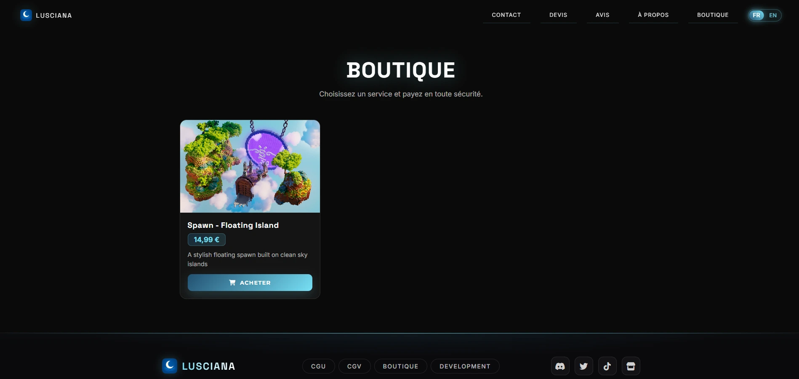
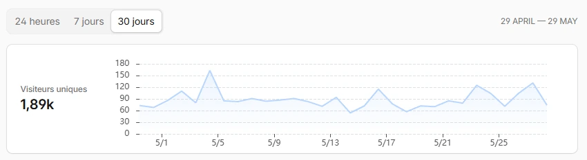

Build & development · Projet phare · 03/10/2025 au 05/11/2025
Lusciana.fr
Développement d’un site web professionnel lusciana.fr (HTML vanilla, Cloudflare Workers et base de données hébergée sur Cloudflare avec les Workers).
01 — Identité
Une vitrine qui porte la marque
Lusciana est une entreprise de build & development. L’objectif était de rassurer dès la première visite : une identité visuelle propre, une lecture simple sur mobile comme sur desktop, et un accès direct aux services, à la boutique et au contact.

02 — Expérience
J’ai structuré la boutique avec des fiches produits lisibles, un paiement sécurisé et un parcours d’achat sans friction. Le site intègre aussi des pages CGU et CGV pour encadrer l’usage du service et les conditions de vente.
03 — Livrables
Ce que j’ai réalisé
- API / Workers / DB Gestion de l’API, des Workers et de la base de données.
- Site pro en ligne Mise en production d’un site professionnel accessible publiquement sur lusciana.fr.
- Frontend + Backend Architecture complète entre frontend et backend pour la vitrine et la boutique.
- Déploiement Cloudflare + DB Déploiement Cloudflare avec base de données pour la boutique.
- Web avancé Technologies web avancées : Workers et API.
- CGU / CGV Conditions générales d’utilisation et de vente intégrées au site.
04 — Performance
Suivi du trafic
Avec Cloudflare Analytics, je suis les visiteurs uniques et les tendances sur 30 jours. Ça me permet d’ajuster le cache, les règles DNS et la charge serveur quand le trafic évolue.
Quand un dysfonctionnement est remonté (latence ou comportement inattendu), je reproduis le cas, je corrige côté front/Workers puis je redéploie avec validation fonctionnelle.

05 — Infrastructure
Stockage des ressources boutique
Les nouvelles captures montrent l’espace de stockage objet Cloudflare utilisé pour la boutique,
avec le compartiment lusciana-downloads et l’état global d’utilisation.
On y voit aussi la liste des objets stockés, notamment le fichier produit présent dans le compartiment, ce qui confirme la persistance des ressources côté plateforme Cloudflare.

06 — Compte
Objets stockés pour la boutique
Cette capture montre la recherche par préfixe dans le compartiment
lusciana-downloads et la liste des objets disponibles.
On visualise directement le fichier produit présent dans le stockage, ce qui permet de vérifier rapidement que les ressources de la boutique sont bien en place.

07 — Suite logique
Vitrine publique, back-office séparé
Le site client tourne sur lusciana.fr et je garde la gestion interne isolée sur admin.lusciana.fr (Docker, MongoDB, API dédiée) pour séparer clairement usage public et administration. Les cartes de commissions y sont sauvegardées deux fois par jour, avec une rétention de 7 jours.
Toute la partie backend métier est présentée dans le projet admin.lusciana.fr, tandis que cette page se concentre sur la vitrine publique et son exploitation web.
Sur le projet, je maintiens aussi une routine de progression continue : documentation technique, veille sur Cloudflare/edge, et capitalisation des retours pour améliorer les prochaines versions.
Découvrir le CRM